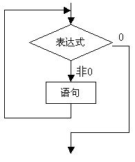
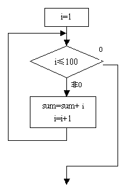
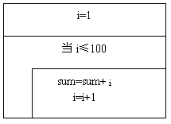

ITEEDU
第六章 循环控制
6.1概述
循环结构是程序中一种很重要的结构。其特点是，在给定条件成立时，反复执行某程序段，直到条件不成立为止。给定的条件称为循环条件，反复执行的程序段称为循环体。Ｃ语言提供了多种循环语句，可以组成各种不同形式的循环结构。
1) 用goto语句和if语句构成循环；
2) 用while语句；
3) 用do-while语句；
4) 用for语句；
6.2goto语句以及用goto语句构成循环
goto语句是一种无条件转移语句, 与BASIC中的goto语句相似。goto 语句的使用格式为:
goto 语句标号；
其中标号是一个有效的标识符,这个标识符加上一个“:”一起出现在函数内某处, 执行goto语句后,程序将跳转到该标号处并执行其后的语句。另外标号必须与goto语句同处于一个函数中,但可以不在一个循环层中。通常goto语句与if条件语句连用, 当满足某一条件时, 程序跳到标号处运行。
goto语句通常不用,主要因为它将使程序层次不清,且不易读,但在多层嵌套退出时, 用goto语句则比较合理。
【例6.1】用goto语句和if语句构成循环, 。
。
main()
{
int i,sum=0;
i=1;
loop: if(i<=100)
{sum=sum+i;
i++;
goto loop;}
printf("%d\n",sum);
}
6.3while语句
while语句的一般形式为：
while(表达式)语句
其中表达式是循环条件，语句为循环体。
while语句的语义是：计算表达式的值，当值为真(非0)时， 执行循环体语句。其执行过程可用下图表示。

【例6.2】用while语句求。
用传统流程图和N-S结构流程图表示算法，见图：


main()
{
int i,sum=0;
i=1;
while(i<=100)
{
sum=sum+i;
i++;
}
printf("%d\n",sum);
}
【例6.3】统计从键盘输入一行字符的个数。
#include <stdio.h>
main(){
int n=0;
printf("input a string:\n");
while(getchar()!='\n') n++;
printf("%d",n);
}
本例程序中的循环条件为getchar()!='\n',其意义是， 只要从键盘输入的字符不是回车就继续循环。循环体n++完成对输入字符个数计数。从而程序实现了对输入一行字符的字符个数计数。
使用while语句应注意以下几点：
1) while语句中的表达式一般是关系表达或逻辑表达式，只要表达式的值为真(非0)即可继续循环。
【例6.4】
main(){
int a=0,n;
printf("\n input n: ");
scanf("%d",&n);
while (n--)
printf("%d ",a++*2);
}
本例程序将执行n次循环，每执行一次，n值减1。循环体输出表达式a++*2的值。该表达式等效于(a*2；a++)。
2) 循环体如包括有一个以上的语句，则必须用{}括起来，组成复合语句。